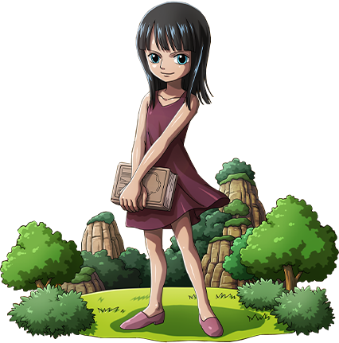

BIOGRAFIA Nico Robin
Nico Robin nasceu na ilha de Ohara, e veio de uma família de arqueólogos. Sua mãe, Nico Olvia, saiu para o mar para encontrar a verdadeira história quando Robin tinha dois anos de idade, deixando-a ao cuidado do irmão de Olvia e sua esposa, Roji. O pai de Robin nunca foi revelado, Olvia afirmou que ela vai honrar o sonho do marido, ela então deixou de estudar os põlglifos. Robin mais tarde vagou para a Árvore do Conhecimento e foi autorizada a ler os livros mantidos dentro do convite de Clover.
Robin apareceu pela primeira vez como "Miss All Sunday" ("Miss Domingo" no anime inglês de 4Kids), agente e vice-presidente da organização Baroque Works, no final do arco do Whisky Peak. Ela era responsável por explodir o navio de chamariz de Igaram, embora Igaram sobreviveu, que aparentemente era sua intenção. Ela conheceu os Piratas do Chapéu de Palha e, depois de brincando com eles por um tempo, ofereceu-lhes uma Pose Eterna para a Ilha Nanimonai. Luffy quebrou em vez disso, dizendo que ele não iria permitir que ela decidir o seu destino. A princesa Vivi revelou que foi Miss All Sunday quem permitiu que ela descobrisse a identidade do presidente do Baroque Works, Crocodile.
Arco Enies Lobby “ EU QUERO VIVER! ME LEVEM AO MAR COM VOCÊS! ” Quando Robin revelou seus medos de ser abandonada pelos Chapéus de Palha por causa do perigo de estar perto dela, Luffy ordenou a Sogeking queimar a bandeira do Governo Mundial. Esta era a maneira de Luffy mostrar a Robin que ele e os Chapéus de Palha nunca a abandonariam, se o Governo Mundial fosse seu inimigo, então eles também seriam o inimigo dos Chapéus de Palha. Luffy então encorajou Robin a dizer que queria viver, o que fez, gritando através do Lobby de Enies que ela queria ir para o mar com eles novamente. Eles procederam a acusar a Torre de Justiça de enfrentar o CP9, para resgatá-la.